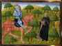

< < < Back
A Modern War, Of Sword And Spirit – Return Of Kings
I greet the men of ROK again with an eye to the future, and some requests.
We live in unusually perverse times
I don’t know if many men will identify with me, but over the past 10 years I often asked myself if I might be going insane. 10 years ago, I was essentially a “moderate” Progressive; but study of the Classics, history and theology, took me swiftly over a long road, into the bosom of tradition and patriarchy.
Perhaps other men have experienced this. You start with a “red pill” about women, and it leads you to see that traditional morals had a reason for existing; or perhaps it opens your eyes to the disingenuous agenda of the establishment, and that epiphany leads to another, and so on. I find that my thinking has been so revolutionized over the past ten years, that it would be difficult to tally all the ways, in which I am now an heretic against the modern world.
Once one debunks the premises of any of the major lies of Modernity, the rest fall apart in quick succession – since they share a basic premise (indiscriminate egalitarianism) – and this fundamentally rearranges one’s worldview in very short order. I was a “nice guy” even in 2008; now I find myself agreeing more with de Maistre and Evola, than Jefferson. Not long ago, such a system of beliefs as I now possess would have seemed intolerably evil to me.
What do I find evil, now? When one considers the myriad abominations celebrated by today’s “respectable” people, it is quite sobering. As the love of patriarchy, justice and excellence burns brighter within me, I find modern iniquity to be so intolerable as to demand decisive action. Women murder their children and “doctors” carve them apart for profit, joking about it while swilling chardonnay.
Scantily clad, prepubescent boys dance sexually for their adoptive “fathers” and other admirers at the Folsom Street Fair. There are now tiny dildos for transitioning toddlers. The financial system is rigged; it punishes earning (tax) and saving (inflation), encourages profligacy (consumerism) and then exploits it (usury).
Mentally ill people mob together and dominate the public forum; them that are sane, the public forum often drives mad. The schools themselves loathe wisdom and learning. There is a seemingly deliberate and coordinated effort to destroy all integral cultures, especially of European peoples. The elites suffer no consequences when they perpetrate high treason or gross injustices; but what happens to you, if you violate a minor statute or go delinquent on your property taxes?
Women destroy their marriages, families and even nations, all to the applause of the crowd… but woe betide the man who would stand on his God-given authority as husband and father to encourage civilization-building behaviours. One could go on and on. There is a crushing oppression and a Satanic madness, that is not only putting everything good and decent to death, but is exalting public evils so heinous, that I often find my blood boiling.
No man likes to feel a sense of impotent rage, but I am often at a loss, when I consider how to remedy our situation. It seems clear to me that electoral politics will achieve nothing. It seems morally wrong to engage lunatic apparatchiks in debate, implying that their ideas are within the bounds of respectable opinion, when a more upright model of engagement is found in book XXII of Homer’s Odyssey.
Moreover, they everywhere suppress free debate; and if debate is not appropriate or possible, only force of arms remains. This, too, is fraught with moral and practical difficulties. Yet one cannot be content to do nothing. The way forward must be found.
An Element Of My Motivation
There are only two things clear to me. 1) The first element of our crisis is spiritual, and this must be resolved before substantive and lasting progress will be made on any other front; 2) There is no clear path at present, humanly speaking, to victory for us—neither by cunning nor by arms; those who will perceive and lead the way forward, will not merely be smart men or strong men, but men of genuine wisdom and excellence.
I have always admired the hermit, because he stands out as a man who uniquely embodies the Truth, and the masculine ethos of the spirit—he is not merely a scribe who knows about the sacred, he has hard-won wisdom through spiritual combat. He is a soldier of the spirit. The lives of countless hermits and monastics recount their battles against devils, and such saints as Anthony the Great and Benedict are still invoked against them.
In Western lore, the hermit is regarded as a companion of sorts to knights, even as a knight himself, spiritually. In Arthurian legend, Mordred ousts the Archbishop of Canterbury, who retreats to an hermitage, where he will heal and counsel various knights, eventually receiving the body of King Arthur, and receiving Sir Bedevere as a disciple.
In Etienne de Bourbon’s tale of Robert the Devil, Robert’s murder of seven hermits is treated as the murder of seven knights. Friars (who lived a similarly ascetic life) often stood at the front of Catholic armies, and went before the soldiers into battle bearing the Cross. The hermit may not take up arms, but he is the peer of fighting men. And as we may soon have need of fighting men, we will have need also of hermits. That, is my vocation.
Saint Anthony is not impressed.
A particular legend, retold in Burger’s Der Wilde Jäger (The Wild Huntsman), tells of how a feckless aristocrat’s encounter with an hermit in the wild resulted in his doom. My space is limited, so I’ll let you find the poem, if you’re interested. It contains perennial truths, but encapsulates our situation well: those in authority have spurned wisdom; the untouchable sacred has vanished from before their eyes, and they are now hounded by their own impudence.
The hermit represents that unshakable power and sanctity, which alone knows and merits to be the touchstone of divine judgment and providence. Men sometimes thank me for sharing what I know about theology and spirituality; I hope to continue doing so at ROK and elsewhere; but if I am to share my opinion with men, I want it to be rooted in something substantive, beyond relating the wisdom that others won by their hard work (though there is some benefit in this).
I am painfully aware that my knowledge at this point is that of a scribe, not the battle-honed wisdom of the hermit, bought by blood in the spiritual combat. I am convinced that the only men who will lead the way forward, are the lucky bastards whom providence carries along willy-nilly (as is often its way), and the men who win direct connection with transcendent wisdom through fidelity to the spiritual struggle.
Perceiving that I can only offer my fellows an informed opinion, at present, as to how we must prosecute the pressing affairs of our age, it is my intent to enter upon the eremitical life and to begin the combat that imparts a keener vision, if indeed it please God to give it. I have long felt that men need to shake off mediocrity, start networking and building “parallel structures,” and otherwise preparing for a drastic change in the world.
I hope to offer a discreet meeting place, a spiritual retreat and, God willing, some worthy counsel to men who walk our path of reclaiming masculinity and reestablishing Patriarchal civilization: a new symbiosis between hermits and knights, as it were!
The Dream of Sir Gawain, wherein a monk admonishes and advises him.
My Requests To The Readers Of ROK
First off, if any men are interested in helping to establish and prosper the hermitage and its mission, even if only by prayer, I’d ask them to go to the link in my author bio.
Secondly, my plan both now and in the future is to share the fruits of contemplation and study with my fellow men. The leadership at ROK wanted me to write two articles, and to gauge whether there was enough interest for me to continue writing for the site. Let me know in the comments if you are so interested, and tell me the kinds of things you would most like to learn about, from a theological perspective.
What questions do you have? What theological topics are of interest to you? I have many ideas for articles, but I’d love to get a feel for where you guys are at, in theological knowledge and interests.
Central to this article, is my own sentiment that action is needed, rooted in authentic learning and experience. I am now preparing to act in the manner that seems most appropriate to me; what obstacles do you find in your own paths, preventing you from responding to the dire needs of our times, whether spiritually or otherwise? How, brothers, can I be at your service?
Read More: Modern Culture Mirrors Jezebel’s Poisonous Spirit


{kind=link}
{kind=link}
{kind=link}